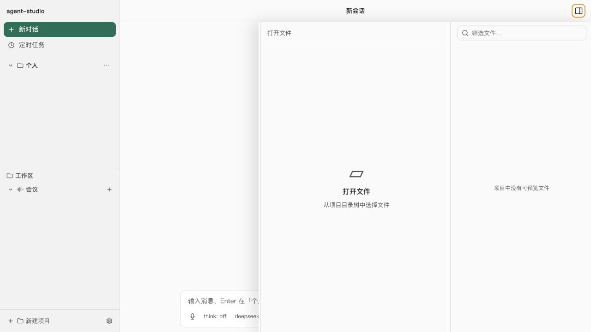
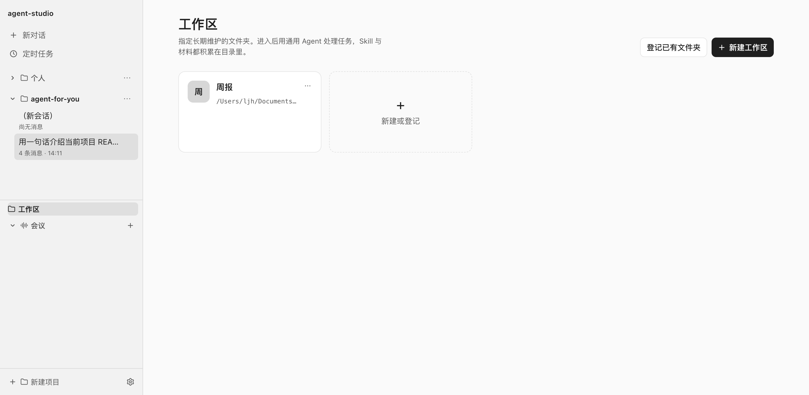
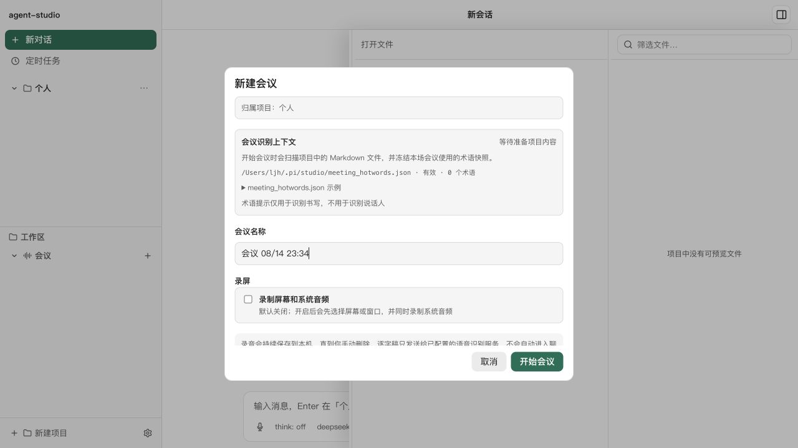
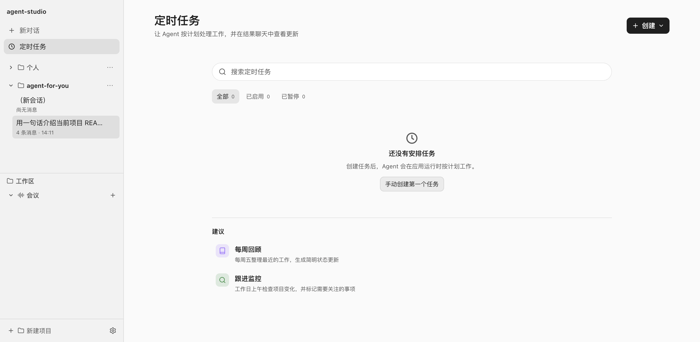

产品命题
工作不发生在聊天框，而发生在项目和时间里
我观察到，现有 Agent 即使单次回答足够聪明，仍很难真正进入长期工作：会话结束后上下文中断，会议内容停留在另一个工具里，重复任务仍要人一次次发起。
因此我把产品目标从“做一个更好用的聊天界面”改为：让同一个 Agent 围绕项目持续获得上下文、沉淀记忆，并在合适的时间主动工作。
上下文会断
换一次会话，就要重新解释项目、偏好和历史决策。
工具彼此割裂
文件、会议和待办分散，讨论结果难以直接进入执行。
Agent 只能被动响应
只有用户开口时才工作，无法持续跟进重复事项。
产品方案
从一次对话，扩展为一条长期工作链路
不是堆叠孤立功能，而是围绕“真实项目”组织三个连续层次。
在项目里做事
直接使用文件、代码与命令，不再手动搬运上下文。
跨会话记得住
把长期有价值的信息沉淀为可阅读、可召回的本地记忆。
按事件主动推进
让会议和计划任务成为 Agent 的新输入与触发器。
产品全景
核心功能
四项能力共同回答一个问题：Agent 如何在真实工作中持续参与，而不是用完即走。

项目工作台
选择本地目录后，Agent 可以读取文件、修改代码、执行命令并预览结果。用户不必反复复制材料，对话直接发生在工作对象旁边——这是「真实含金量」的第一证据：它碰得到项目。

工作区与长期记忆
把周报等长期场景登记为工作区，材料与 Skill 持续积累；对话中的画像、决策和知识按需沉淀，并在新会话中召回。

AI 会议
支持麦克风、系统音频与屏幕录制，实时转写并区分说话人，结束后生成摘要和行动项，让“会上说了什么”直接衔接后续执行。

定时任务
为周报整理、项目巡检等例行工作设定计划，Agent 到点执行并把结果返回聊天。重复工作无需每次重新发起。
产品取舍
三个关键产品决策
本地优先，而非先做云端账户
代码、记忆与会议录音涉及高敏感信息，因此先建立“数据留在本机、用户能够检查”的信任基础。
记得少一点，但更有价值
只沉淀 30 天后仍有用、且不容易重新推导的信息；记忆异步写入，即使失败也不打断正常对话。
同一个 Agent，多种工作入口
Web、桌面与 CLI 共用能力，会议负责补充现场上下文，定时任务负责触发行动，避免形成多个割裂助手。
我的贡献
我如何把想法做成可运行 Demo
我以 AI 产品经理视角完成产品定位、需求拆解、信息架构与交互设计，并用 Vibe Coding 把关键链路推进到可运行版本——展示的是定义问题 + 做成闭环的能力，而不是堆功能清单。
- 定义问题：从 coding agent 的单次会话，重新定位为「围绕项目持续工作」的个人 Agent 工作台。
- 设计闭环：把项目、记忆、工作区、会议和自动任务组织成连续体验，而不是四个孤立插件。
- 驱动落地：拆解 Prompt、选择方案、运行测试、定位问题并持续调整，直到形成可运行 MVP。
实现边界：底层 Agent 能力基于 pi集成与扩展；我不把自己包装成传统全栈工程师，而是展示如何借助 AI 完成产品闭环，并用 GitHub 源码自证。